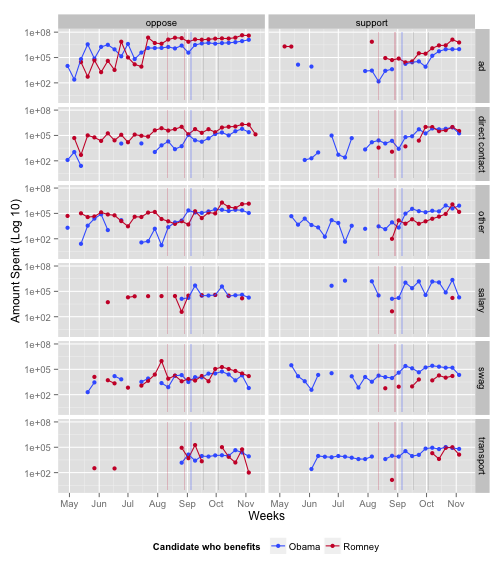

Type of Spending over Time
|
 |
|
Type of spending by weeks of 2012
This plot displays the spending in each of the 6 categories by independent organizations benefiting Barack Obama and Mitt Romney for each week since April 25, 2012. The spending amounts are split by whether the goal was to support or oppose a candidate. There are three markers which signify major events in the campaign: the selection of Paul Ryan as Mitt Romney's vice presidential nominee, the Republican National Convention, the Democratic National Convention, the 47% video and the debates. Interesting trends can be observed in advertisement spending, and direct contact. Ads in support of both candidates have picked up since the end of July. However, ads in opposition of the candidates were airing well before. You can, however, see an increase in negative ads benefiting Romney. There has also been a noticeable increase in spending on direct contact for Obama, while the Romney organizations have maintained consistent spending in negative direct contact for quite some time. |